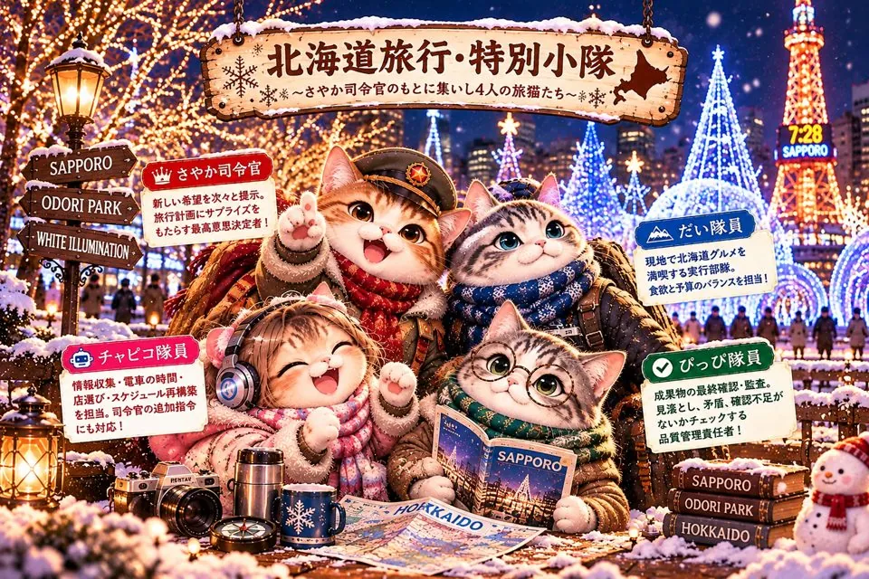
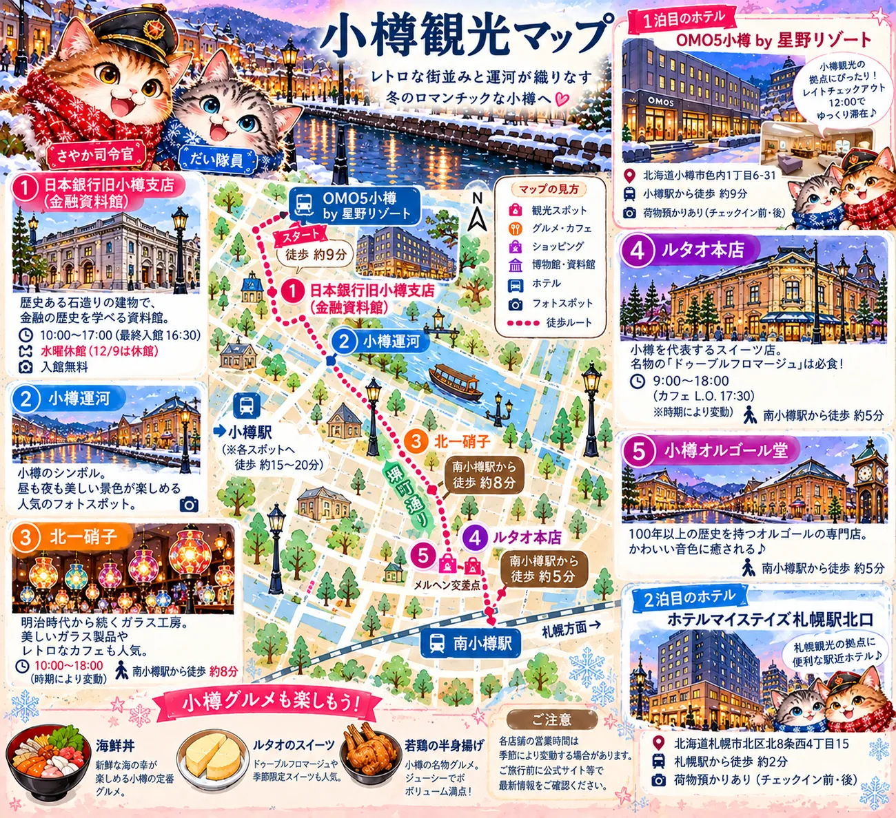
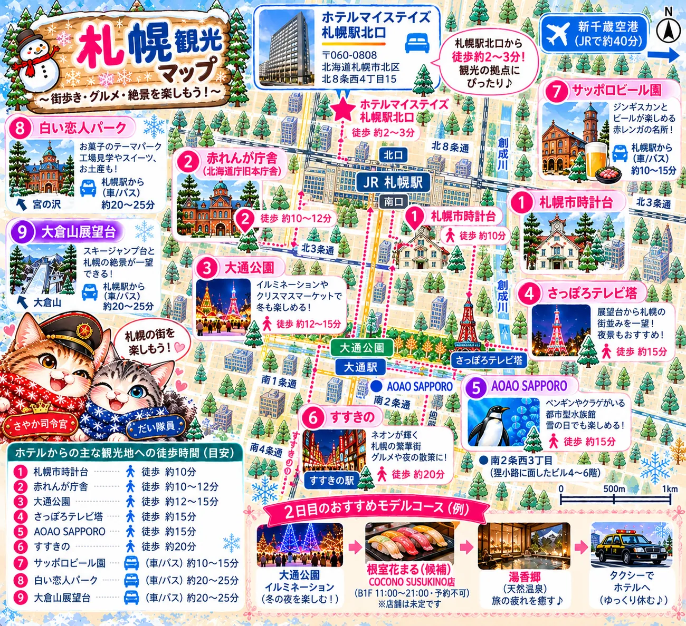
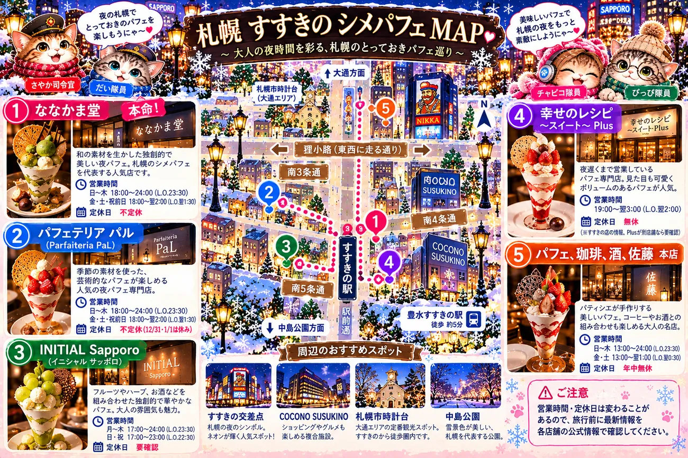

HOKKAIDO SPECIAL SQUAD
～北海道旅行 特別小隊～
さやか司令官の元に集いし、
4人(？)の旅猫たち
小隊メンバー
& だい隊員
& ぴっぴ隊員
12/8〜12/10、小樽と札幌へ。
みんなで雪の北海道を楽しむぞ〜！
1日目｜12月8日(火)
✈️ 伊丹 → 新千歳 → 🏮 OMO5小樽
🍽️ おたる満喫プレート
灯る小樽ナイトラウンジで、滞在中1回ご用意があります。自宅を出発💪 だい隊員の朝
寝屋川市駅まで徒歩15分
寝屋川市駅 発 → 伊丹空港 8:49 着
京阪 → 大阪モノレール(門真市で乗換)
🔍 乗換の詳細・予備の電車
本命(7:52発)
- 7:52 寝屋川市 発(京阪・淀屋橋行)→ 8:02 門真市 着
- 8:06 門真市 発(大阪モノレール・空港行・始発)→ 8:45 空港駅 着
- 徒歩4分 → 8:49 伊丹空港 着
予備の電車
- 早め:7:37発 → 8:41着(自宅7:15ごろ出発・乗換1回)
- 遅め:7:59発 → 8:58着(自宅7:37ごろ出発・乗換2回:萱島・門真市)
※9時台の電車は、搭乗に間に合わないので使いません。
※12/8の時刻は、旅行前に再確認します。
伊丹空港に到着
ANAのチェックイン・荷物預け → 保安検査 → 搭乗口へ
手荷物の預け入れは、出発の20分前(10:00)が目安(伊丹は要確認)
大阪/伊丹空港 出発
ANA773便 ・ 普通席
札幌/新千歳空港 到着
新千歳空港駅 発 → 小樽駅 15:04 着
JR快速エアポート ・ 乗換なし(本命)
🔍 ほかの電車・指定席の料金
空港駅の発車時刻(候補)
- 12:50発 → 小樽 14:04着
- 13:20発 → 小樽 14:41着
- 13:50発 → 小樽 15:04着(本命)
- 14:19発 → 小樽 15:41着
運賃(1人)
- 自由席:2,040円
- 指定席:3,040円(+1,000円)
※10/27の検索結果をもとにした予測です。
※12/8の時刻は、旅行前に再確認します。
OMO5小樽 by 星野リゾート
チェックイン ／ 1泊目
灯る小樽ナイトラウンジ
「おたる満喫プレート」を1回ご用意
2日目｜12月9日(水)
🏮 OMO5小樽 → 札幌 → 🏨 マイステイズ札幌駅北口
⏰ ゆっくり出発できます
小樽のチェックアウトは12時(レイトチェックアウト)です。OMO5小樽で朝ごはん
宿泊プランに朝食が含まれています
OMO5小樽 チェックアウト
札幌へ移動
チェックインまでは自由時間
ホテルマイステイズ札幌駅北口
チェックイン ／ 2泊目
夜ごはんは自由に
このプランはお食事なしです
3日目｜12月10日(木)
🏨 札幌 → 新千歳 → ✈️ 伊丹
⏰ 時間のめやす
ホテルのチェックアウトは11時、新千歳空港の出発は15:30です。ホテルマイステイズ札幌駅北口 チェックアウト
空港へ向かうまで自由時間
最後の北海道をたっぷり
札幌/新千歳空港 出発
JAL2010便 ・ 普通席
大阪/伊丹空港 到着
おつかれさまでした！
ご案内｜宿と航空便
予約内容をまとめて確認できます
✈️ 往路 12/8(火)
- 便名
- ANA773便 ・ 普通席
- 区間
- 大阪/伊丹 10:20 → 札幌/新千歳 12:10
🏮 1泊目 OMO5小樽 by 星野リゾート
- チェックイン
- 15:00
- チェックアウト
- 12:00(レイトチェックアウト)
- お部屋
- スーペリアルーム ・ 禁煙 ・ 2名1室
- お食事
- 朝食のみ
- 特典
- 灯る小樽ナイトラウンジで「おたる満喫プレート」(滞在中1回)
🏨 2泊目 ホテルマイステイズ札幌駅北口
- チェックイン
- 15:00
- チェックアウト
- 11:00
- お部屋
- スーペリアツイン ・ 禁煙 ・ 2名1室
- プラン
- カジュアルステイ(食事なし)
✈️ 復路 12/10(木)
- 便名
- JAL2010便 ・ 普通席
- 区間
- 札幌/新千歳 15:30 → 大阪/伊丹 17:30
📝 旅のメモ
- 添乗員は同行しません
- 最少催行人員は1名です
- 2027年3月31日(沖縄は5月6日)までに出発の方が対象です
冬の北海道旅支度❄️🐱
🎒 持ち物
- 🧥 あったかいアウター(風を通しにくいもの)
- 🧤 手袋(スマホ対応だと便利)
- 👟 滑りにくい靴
- 🧣 ニット帽かネックウォーマー
- 🔥 カイロ
👟 靴の選び方
- 「冬用ソール」「防滑」の表示があるもの
- 防水か撥水のもの
- 履き口がしっかりして、雪が入りにくいもの
✨ 手軽にいくなら、今の靴に付ける後付けの滑り止め(数千円)でもOK
🛍️ 買うタイミング
- 11月に入ってから、ゆっくりそろえればOK
- 靴は、大きめのスポーツ用品店か靴屋さんが狙い目
小樽紹介｜グルメと観光🐟
小樽の観光とグルメ ・ 作成：だい隊員
🗺️ 小樽観光マップ

ピンチで拡大して見てね 🔍
🏛️ 小樽観光スポット おすすめリスト
⭐ 優先して行きたいスポット
① 小樽オルゴール堂 本館大正時代の歴史的建築と、たくさんのオルゴールの音色。蒸気時計も必見！⏱ 30〜45分 ② 北一硝子 三号館・北一ホール美しいガラス製品と、石油ランプの灯りが幻想的な喫茶空間。⏱ 30〜45分 ③ 小樽洋菓子舗ルタオ本店 🍰名物「ドゥーブルフロマージュ」やカフェのスイーツ。展望室も楽しめる！⏱ 30〜45分 ④ 日本銀行旧小樽支店金融資料館1912年完成。「北のウォール街」小樽の歴史と金融の仕組みを学べる。金庫室や1億円の重さ体験も！⏱ 30〜45分・入館無料⚠️ 水曜休館 → 12/9(水)はお休み。12/8か12/10に ⑤ 小樽運河石造りの倉庫と運河が美しい、小樽を代表する景観。夕方〜夜の散策がおすすめ。⏱ 20〜30分✨ 余裕があれば行きたいスポット
⑥ 旧三井銀行小樽支店(小樽芸術村)重厚な銀行建築と美しい内装。小樽の繁栄の歴史を感じられる。⏱ 30〜45分 ⑦ ステンドグラス美術館(小樽芸術村)19〜20世紀初頭の美しいステンドグラスを鑑賞。⏱ 30〜45分 ⑧ 旧手宮線跡地北海道の鉄道史を感じられる線路跡の散策路。写真撮影にもおすすめ。 ⑨ 大正硝子館 本店歴史ある商店建築で、手作りガラス作品を楽しめる。北一硝子との違いも楽しんで。🚶 おすすめの回り方
※エリア間は少し距離があるため、当日の時間や天候に合わせて調整。ルタオ本店はオルゴール堂のすぐ近くだよ。
👑 さやかちゃんへのおすすめ
オルゴール堂・北一硝子・ルタオ本店・日本銀行金融資料館・小樽運河の5か所を優先して、時間があれば小樽芸術村も追加するプランがおすすめ！※営業時間は12月の旅行前に公式サイトで再確認
👀 観光スポットのあとは、小樽グルメもチェックしてね！
1日目の晩ご飯と2日目のお昼ご飯の候補
📅 食べる予定
🌙 1日目の晩ご飯 → ①浜茶屋さん(②和楽が予備)☀️ 2日目のお昼ご飯 → ③滝波食堂(④たけだが予備)
🌙 1日目の晩ご飯(候補)
① 浜茶屋さん 🍶
晩ご飯のメイン- 南小樽の海鮮・居酒屋
- 営業:火〜日 17:00〜21:40(月曜休み)
- 予約OK 📞 0134-24-0769
- 予算:1人4,000円台くらい
- 移転しているので、行く前に地図で場所を確認
☀️ 2日目のお昼ご飯(候補)
🍣 お昼も夜もいける！
⑤ 回転寿司 とっぴ〜 小樽運河通り店 🍣
昼・夜どっちも- 小樽運河近くの回転寿司
- ボタンエビや生ウニなど、北海道らしいネタに注目！
- 住所:北海道小樽市港町6-4
- 営業:11:00〜21:00(L.O.20:30)※最新情報は要確認
☕ オススメカフェ
🎬 参考YouTube
💡 YouTubeの小ワザ
動画右上の⚙️(設定)→「再生速度」→「2倍速」で、情報系の動画をサクッとチェックできるよ✨👀 食べたあとは、観光スポットもチェックしてね！
札幌紹介｜グルメと観光🦀
札幌〜すすきのエリア中心 ・ 🏨 ホテルマイステイズ札幌駅北口
🗺️ 札幌観光マップ

ピンチで拡大して見てね 🔍
⛄ 札幌観光スポット候補(12/9 水)
📌 12/9は小樽から札幌へ移動する日
全部回るより、行きたい場所を選んでのんびり観光する予定😊🥇 優先候補5つ
🎄 大通公園イルミネーション・クリスマスマーケット 🧱 赤れんが庁舎歴史的建築・写真撮影 🗼 さっぽろテレビ塔札幌の夜景 🐧 AOAO SAPPOROペンギンやクラゲがいる都市型水族館 🍖 サッポロビール園ジンギスカン✨ プラスアルファ候補
🕰️ 札幌市時計台札幌の定番スポット 🍫 白い恋人パークお菓子・スイーツ・お土産 🌃 すすきのネオン街散策・夜ごはん 🍜 元祖さっぽろラーメン横丁夜のラーメン 🌙 大倉山展望台ジャンプ台と札幌の景色※営業時間・イベント開催状況は、旅行前に各公式サイトで確認しよう！
👀 観光スポットのあとは、グルメとシメパフェもチェックしてね！
😊 候補だから、見るだけでOK！
気になるお店があったら教えてね。🍣 寿司・海鮮
① 根室花まる ココノススキノ店
⭐ 第一候補- COCONO SUSUKINO 地下1階(すすきの)
- 営業:11:00〜21:00(L.O. 20:30)
- 席の予約はできず、店頭の発券機で受付
② できたて屋 JRタワーステラプレイス店
花まる系列の焼き魚定食- JRタワー ステラプレイス センター6階
- ホテルから徒歩約5〜10分
- 営業:11:00〜22:00
- 炭火の一夜干しや海鮮丼が楽しめる
③ 瑠玖＆魚平(るっく＆うおへい)
⭐ おすすめ- 札幌・狸小路6丁目の海鮮居酒屋
- 予算:1人 3,000〜5,000円くらい
- おまかせ刺身5点盛りなど、刺身が充実
- 花まるとは違う、居酒屋スタイルの海鮮
🍛 スープカレー
📅 日程別の候補
- 空港グルメは別ページにまとめる予定
- 空港と小樽で食べ過ぎ注意🍽️
- 札幌駅周辺:できたて屋 / Suage4 / サボイ
- すすきの:花まる / 瑠玖＆魚平
- 昼と夜の組み合わせは、観光の進み具合で決めよう
- スアゲ4でランチ
- 空港ではフライトと買い物の時間を優先
🎬 参考YouTube
💡 メモ
① 寿司・焼き魚・居酒屋・カレーで、ジャンルを分ける② 札幌駅周辺は、ホテル近くのお店を使う
③ 1日に詰め込みすぎない
⚠️ 出発前に確認
・12/9(水)の各店の営業状況・スアゲ4の12/10(木)の営業時間・定休日
・各店の営業時間・定休日・価格
※お店は候補段階です
👀 ご飯のあとは、シメパフェもチェックしてね！
🍨 札幌シメパフェ おすすめ5店舗
🌙 シメパフェってなに？
札幌では、飲んだあとやご飯のあとに「シメ」としてパフェを食べる文化があるよ。夜遅くまで開いてるお店が多いのが特徴！
ピンチで拡大して見てね 🔍
① ななかま堂
⭐ 本命- 営業:日〜木 18:00〜24:00 ／ 金・土・祝前日 18:00〜翌2:00
- 定休日:不定休
- 和の素材を生かした、独創的で美しい夜パフェ。札幌らしい本格的なシメパフェを楽しみたい人に！
② パフェテリア パル
ななかま堂と並ぶ有力候補- 営業:日〜木 18:00〜24:00 ／ 金・土・祝前日 18:00〜翌2:00
- 定休日:不定休
- 季節の素材を組み合わせた、芸術的なパフェが楽しめる人気店。
③ INITIAL Sapporo(イニシャル サッポロ)
華やか系- 営業:月〜土 17:00〜24:00(L.O.23:30)／ 日・祝 17:00〜23:00(L.O.22:30)
- 定休日:要確認
- フルーツにハーブやお酒などを組み合わせた、独創的で華やかなパフェ。
④ 幸せのレシピ〜スイート〜Plus
深夜の予備候補- 営業:19:00〜翌3:00
- 定休日:無休(※すすきの店の情報。Plusが別店舗なら要確認)
- 個性的なパフェの専門店。深夜まで営業しているので、ほかが混んでいたときの候補にも！
⑤ パフェ、珈琲、酒、佐藤 本店
昼から行ける- 営業:13:00〜24:00(金・土は翌1:00まで)
- 定休日:年中無休
- パティシエが手作りする美しいパフェ。コーヒーと一緒に大人のデザートタイムを。
🍨 チャピコのおすすめ順
① ななかま堂(本命)→ ② パフェテリア パル → ③ INITIAL Sapporo → ④ 幸せのレシピ → ⑤ 佐藤 本店※営業時間・定休日は変更される場合があるため、旅行前に最新情報を確認してね
👀 パフェのほかに、観光スポットとグルメもあるよ！
新千歳空港紹介｜空港グルメ特集✈️
北海道旅行 グルメガイド 〜新千歳空港 特集〜
🗺️ 空港グルメマップ
【3階】飲食メインスペース
横にフリックすると、マップが順番に切り替わるよ！🤭 ピンチで拡大もOK🔍
😋 注意
きのとや(キノトヤ)は2階だよ！🎬 参考YouTube
🍜 ラーメン
🍛 スープカレー
🍦 スイーツ
⚠️ 出発前に確認
・各店の営業時間・定休日・価格(変わることがあります)
※お店は候補段階です